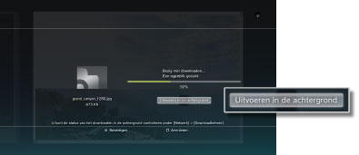
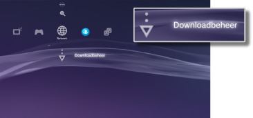

Netwerk > Downloaden op de achtergrond
Downloaden op de achtergrond
Downloaden in de achtergrond is een functie waardoor u andere handelingen kunt uitvoeren tijdens het downloaden van een grote hoeveelheid data of data met een grote bestandsgrootte. Deze functie is alleen beschikbaar als [Uitvoeren in de achtergrond] wordt weergegeven op het scherm dat tijdens het downloaden wordt weergegeven.

Opmerkingen
- U kan mogelijk niet downloaden op de achtergrond, afhankelijk van het type data of de hoeveelheid data-items die worden gedownload.
- Installatie kan nodig zijn om gedownloade data zoals games en videobestanden te gebruiken. Als het downloaden is voltooid, worden data die installatie vereisen, weergegeven als
 of
of  in elke categorie.
in elke categorie. - Downloaden op de achtergrond is mogelijk niet beschikbaar als er ongeïnstalleerde data-items aanwezig zijn in de systeemopslag.
- Als het PS3™-systeem wordt uitgeschakeld tijdens een downloadproces op de achtergrond, wordt de downloadstatus opgeslagen. Het downloaden wordt automatisch herstart de volgende keer dat het PS3™-systeem wordt ingeschakeld en verbonden is met het internet.
- Een downloadproces op de achtergrond wordt tijdelijk gestopt als eender welke van de volgende handelingen wordt uitgevoerd. Het downloadproces zal automatisch herstarten zodra de handeling voltooid is.
- - Bij het afspelen van een Blu-ray Disc of dvd
- - Bij gebruik van de netwerkfuncties van online games *
- - Bij het opstarten van PlayStation®2-software
- - Bij het opstarten van stem-/videochat
- - Bij het uitvoeren van een systeemupdate
- - Bij het aanpassen van instellingen onder
 (instellingen)
(instellingen)
*
Het downloaden op de achtergrond wordt tijdelijk gestopt tijdens het beëindigen van een game.
Let op
- Sommige PlayStation®2- of PlayStation®-softwaretitels kunnen anders werken op het PS3™-systeem dan op PlayStation®2- of PlayStation®-systemen of werken soms niet goed op het PS3™-systeem.
- Discs in PlayStation®2-formaat kunnen niet afgespeeld worden op sommige PS3™-systemen. Voor meer informatie kunt u [Types afspeelbare discs] raadplegen, de SIE-website voor uw regio bezoeken of de documentatie bekijken die met uw PS3™-systeem meegeleverd werd.
Downloadbeheer
Deze optie wordt enkel weergegeven wanneer downloaden op de achtergrond wordt uitgevoerd. U kunt de downloadstatus controleren of het downloaden van data via  (Internetbrowser) of
(Internetbrowser) of  (PlayStation®Store) annuleren. Selecteer
(PlayStation®Store) annuleren. Selecteer  (Downloadbeheer) onder
(Downloadbeheer) onder  (Netwerk).
(Netwerk).

Downloadstatus controleren
Selecteer het pictogram van de data waarvan u de downloadstatus wilt controleren, druk op de  -toets en selecteer vervolgens [Status] in het optiesmenu.
-toets en selecteer vervolgens [Status] in het optiesmenu.
Download annuleren
Selecteer het pictogram van de gegevens waarvoor u het downloaden wenst te stoppen, druk op de -toets en selecteer vervolgens [Annuleren] in het optiesmenu. Nadat de download geannuleerd is, zal hij verwijderd worden uit (Downloadbeheer).
Download pauzeren/hervatten
Selecteer het pictogram van de data waarvoor u het downloaden wenst te pauzeren, druk op de -toets en selecteer vervolgens [Pauze] in het optiesmenu. Om het downloaden te hervatten, druk opnieuw op de -toets en selecteer vervolgens [Hervatten] in het optiesmenu.
Opmerkingen
- Wanneer u het downloaden onderbreekt, zal
 worden weergegeven bij het pictogram.
worden weergegeven bij het pictogram. - Wanneer u één download onderbreekt tijdens het downloaden van meerdere data, zal het volgende data-item automatisch beginnen te downloaden.
Alle downloads pauzeren
Selecteer het pictogram van eender welke download, druk op de -toets en selecteer vervolgens [Alles pauzeren] in het optiesmenu.
Alle downloads hervatten
Selecteer het pictogram van eender welke download, druk op de -toets en selecteer vervolgens [Alles hervatten] in het optiesmenu.